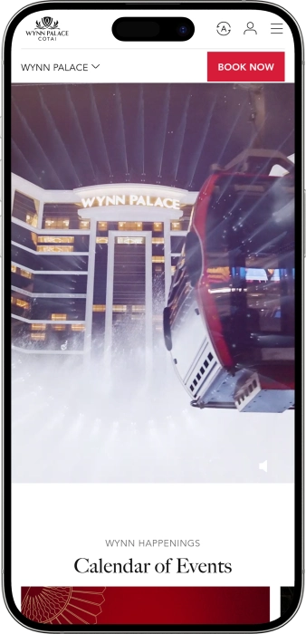
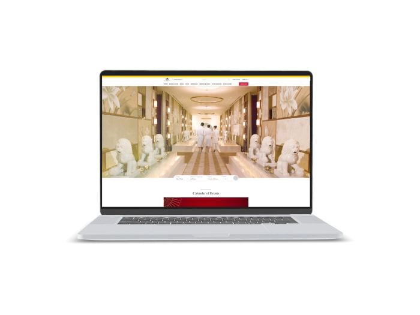

Exclusive welcome offer of
Exclusive welcome bonus of
Wynn Palace Casino — Luxus-Casino, Spiele, Hotel und Entertainment
Top Casinos
Bonus Details
Casino
Bonuses
Rate
Free Spins
More Info
Get
Advantages
- At Wynn Palace, our casino brings together refined gaming, luxury comfort, culinary pleasure, and polished service.
-
Progressive jackpots bring impressive win potential.
-
Table games feature skilled, attentive dealers.
-
High-limit salons elevate premium play.
-
Wynn Rewards unlocks gaming benefits.
-
Elegant design shapes every visit.
-
Bars and dining complete evenings.
-
Personal service makes play memorable.
- We create a premium gaming mood where every table, slot machine, lounge, and reward feels carefully curated for our guests.
Wynn Palace App



About Wynn Palace
At Wynn Palace, we stand out through elevated gaming, refined service, and a powerful sense of occasion. Our casino is designed for guests who appreciate win potential, exclusivity, and a polished luxury experience.
- Jackpots can reach millions.
- Benefits up to 25%.
- VIP salons raise stakes.
Wynn Palace is our casino for guests who seek refined gaming and a high level of comfort. We create an environment where classic table games, slot machines, and premium salons blend with a luxurious atmosphere. Every gaming area is shaped with attention to detail, privacy, and smooth service.

Our guests can move naturally from play to dining, from cocktails to shows, and from evening entertainment to a complete hotel stay. We maintain a confident, elegant, and celebratory rhythm throughout the casino. Personal service and guest comfort remain central to every visit. At Wynn Palace, it is easy to enjoy a full evening without leaving the resort experience. We bring together entertainment, restaurants, bars, spa, shopping, and gaming in one premium setting. Our casino suits experienced players as well as guests discovering live casino play for the first time. Wynn Palace is where gaming feels stylish, immersive, and memorable.
Wynn Palace : Opening Hours, Payment Methods and Loyalty Program
Wynn Palace — A Luxurious Gaming Evening with Hotel Comfort, Bars, and Shows
At Wynn Palace, we design our casino experience as part of a complete luxury stay. Our style blends palace-inspired elegance, artistic details, floral creations, and a refined sense of celebration. The atmosphere across our gaming areas is polished, confident, and welcoming, giving guests a comfortable setting for table play, slot entertainment, premium stakes, and private gaming moments. Our casino areas are arranged for convenient play, while selected formats may vary by game type, salon style, and table availability. Guests can enjoy classic table games, electronic machines, high-limit areas, and exclusive gaming spaces shaped around attentive service. After gaming, Wing Lei Bar adds a sophisticated cocktail lounge mood with elegant lighting and an evening rhythm. For dining, we bring together signature restaurants, premium steakhouse experiences, contemporary Japanese cuisine, refined Chinese flavors, and relaxed casual concepts. Our rooms and suites make the visit complete, allowing guests to continue the evening with hotel comfort, spa rituals, poolside relaxation, or in-room serenity. Entertainment adds another layer through Performance Lake, SkyCab, Illuminarium, floral creations, and seasonal events. Wynn Rewards enriches the journey with privileges, dining benefits, invitations, and personalized offers. We shape every visit so gaming, leisure, service, and beauty feel connected. Wynn Palace is our casino where the evening can begin at a gaming table and continue through cocktails, dining, wellness, and a luxurious stay.
| Zone | Days | Hours |
|---|---|---|
| Main gaming hall | Daily | 24 hours |
| Slot machines | Daily | 24 hours |
| Table games | Daily | 24 hours |
| High-limit salons | Daily | By availability |
| Private gaming rooms | Daily | By advance request |
| Wing Lei Bar | Daily | 5:00 pm–1:00 am |
Wynn Palace — Service, Currency, Payments, and Winning Payouts
At Wynn Palace, we shape our service around confidence, clarity, and personal attention from the moment a guest arrives. Our team supports guests with directions across gaming areas, basic table-game guidance, Wynn Rewards questions, cashier services, and premium hospitality requests. Communication is commonly available in English and Chinese, while additional language support can be requested through concierge or guest service teams when available. We want every guest to feel comfortable, informed, and well looked after in an elegant casino environment.
For gaming activity, HKD is typically the main currency used for chips, machine play, and payouts. Guests may prepare cash in advance or use cashier services where available. In hotel areas, restaurants, boutiques, and leisure venues, payment options may include bank cards, cash, and selected cashless methods depending on the service point. Gaming chips are purchased through the casino cashier or at eligible gaming tables under the rules of each area. ATMs are available within convenient resort pathways, and currency exchange questions can be handled through casino cashier or hotel service channels.
Winning payouts are usually completed through the casino cashier, where guests exchange chips or confirm eligible balances before receiving funds through an available method. Larger payouts may require identity verification, document checks, and standard financial security procedures. Depending on the amount and format of play, payouts may be handled in cash, through a casino account, by bank arrangement, or through another approved channel. We aim to keep the process smooth, discreet, and personally supported.
Tax is typically not deducted directly from standard guest payouts at the table or cashier. Each guest remains responsible for any personal tax obligations that may apply in their own place of tax residence. We recommend keeping receipts, cashier confirmations, or payout records for larger amounts so the financial history remains clear and easy to reference. This approach supports transparency, comfort, and confidence throughout the gaming journey.
Wynn Palace — Casino Visit Rules and a Smooth Arrival
At Wynn Palace, we create a premium gaming environment where style, safety, and respectful conduct matter. Access to gaming areas is available only to guests who meet the required casino-entry age. A valid identity document may be requested to confirm age and identity. We recommend smart casual attire that matches the elegant character of Wynn Palace. Selected bars, restaurants, lounges, and private salons may apply a more refined dress expectation. Inside gaming areas, guests are encouraged to keep conversations calm and respectful. Photo and video recording may be restricted in order to protect guest privacy. Smoking is permitted only in designated areas where available. Alcohol service follows responsible hospitality standards and the refined mood of the resort. Guests can arrive by taxi, transfer, private car, or hotel transport service. Parking, valet assistance, and team guidance are available for convenient movement across the resort. We make every visit feel polished, simple, and aligned with the level of our casino.
Dress Code
- • Smart casual attire supports the polished gaming atmosphere we create at Wynn Palace.
- • Evening looks such as jackets, dresses, shirts, and elegant footwear are well suited for lounges and private salons.
- • Selected venues may request full-length trousers, closed shoes, and a hat-free presentation.
Entry Conditions
- • Casino access is available only to guests who meet the required legal gaming age.
- • A valid original identity document may be requested at the entrance or cashier.
- • Guests are asked to follow team instructions and maintain respectful conduct.
Restrictions
- • Photography and video recording may be limited inside gaming areas for privacy protection.
- • Large luggage, unsafe items, and disruptive accessories are not suitable for the gaming floor.
- • Bets should be placed personally by the guest participating in the game.
Parking and Arrival
- • Guests arriving by private car can use parking and valet services when available.
- • Taxi and transfer drop-off areas provide convenient access to main entrances.
- • Our team helps guests find the casino, restaurants, bars, hotel lifts, and leisure areas.
Wynn Palace — Wynn Rewards and Personal Privileges
At Wynn Palace, Wynn Rewards is our program for guests who want more value from every visit. It connects gaming activity, dining privileges, invitations, selected offers, gifts, wellness experiences, and personalized service. Membership helps transform gaming, dining, shopping, and leisure into one rewarding journey. We value returning guests and make their experience more convenient through card tiers, earning mechanics, and individual offers. Wynn Rewards includes Red, Gold, Diamond, and Chairman levels. The higher the level, the broader the benefits available across Wynn Palace. Restaurant discounts may reach 10%, 15%, 20%, and 25% depending on tier. Members may also enjoy priority services, special event invitations, selected store benefits, spa-related options, and gift redemption opportunities. Registration can be completed online or through Wynn Rewards service counters. We want each member to feel the program’s value not only during play but throughout the full resort experience. Wynn Rewards makes every visit more personal, flexible, and engaging. We continue to shape the program so guests can discover new privileges whenever they return.
Registration Conditions
- • One personal account allows each guest to collect and use member privileges.
- • A valid identity document and age confirmation may be required for enrollment.
- • Online activation gives members access to account features and personalized offers.
- • Wynn Rewards service counters support registration, card questions, and benefit guidance.
Wynn Rewards Tiers
- • Red is the entry tier with member offers, promotional access, and dining benefits up to 10%.
- • Gold is reached through guest activity and can unlock stronger privileges, including dining benefits up to 15%.
- • Diamond is a premium tier for active guests, with benefits up to 20%, priority service, and wider invitations.
- • Chairman is the highest tier for our most valued guests, with benefits up to 25%, VIP service, and exclusive access.
Available Benefits
- • Dining discounts of 10–25% help extend a gaming evening into restaurants and cocktail lounges.
- • Special event invitations connect members with dining events, promotions, and curated experiences.
- • Priority seating can support smoother access to selected restaurants and bars.
- • Spa-related privileges allow members to use myRewards for selected beauty and wellness experiences.
- • Gift catalog options can include lifestyle items, accessories, electronics, and seasonal rewards.
- • Parking and valet privileges add comfort to arrival and departure for selected tiers.
- • VIP check-in and check-out can create a more personal hotel service experience for higher tiers.
Software Providers
Entertainment and Gaming at Wynn Palace
Wynn Palace — Gaming Bonuses, Win Potential, and Seasonal Offers
At Wynn Palace, we create a gaming environment where bonuses, winning opportunities, and entertainment enrich the whole visit. Beyond Wynn Rewards, guests may discover selected gaming promotions, seasonal events, prize draws, dining specials, and entertainment packages. Our slot machines attract guests with different rhythms, from quick spins to progressive jackpots with major potential. Table games bring the energy of a live casino floor, where each round follows the game rules, bet pace, and personal approach. In premium areas, guests can choose a higher level of stakes and a more personalized style of service. Seasonal offers often connect gaming with dining, shows, bars, spa, or hotel stays. For entertainment, we bring together Performance Lake, SkyCab, Illuminarium, floral creations, and culinary events. During selected periods, guests may find formats such as buy-one-get-one admission, dining credits, promotional dinners, and themed evenings. Gaming winnings depend on the rules of each game and the chosen participation format. Our bonus mechanics are designed not only for excitement but also for memorable leisure. Wynn Palace makes every visit rich in atmosphere, elegance, and rewards. We aim to give guests new reasons to return again.
Gaming Opportunities
- • Progressive jackpots on selected machines can build significant prize pools as play continues.
- • High-limit play suits guests seeking elevated stakes, premium salons, and major winning scenarios.
- • Table game payouts in baccarat, blackjack, roulette, and sic bo create a fast live-casino rhythm.
- • Electronic games allow flexible play, from relaxed sessions to dynamic entertainment.
Special Offers
- • Dining credits may appear during selected promotions, including examples such as MOP 500 when campaign conditions are met.
- • Gift mechanics may include luggage, souvenirs, lifestyle rewards, and seasonal items.
- • Hotel offers can combine luxury stays with breakfast, late check-out, or selected package privileges.
- • Entertainment admission may include special formats such as a second ticket as a gift during limited periods.
Seasonal Events
- • Culinary evenings with guest chefs, tasting menus, and seasonal menus enhance the visit.
- • Holiday promotions add themed decor, selected offers, and event-driven experiences.
- • Performance Lake brings a dramatic visual highlight to a gaming evening.
- • Illuminarium creates an immersive reason to combine gaming, leisure, and show-style entertainment.
Wynn Palace — Popular Games in Our Casino
At Wynn Palace, we create gaming spaces for many styles of play: relaxed, dynamic, premium, and strategic. Guests can choose from live table games, slot machines, electronic terminals, and high-limit formats. Baccarat remains one of the most popular games thanks to its elegant pace and clear betting structure. Blackjack appeals to guests who enjoy decision-making and the rhythm of every card. Roulette creates a theatrical moment of anticipation, where the wager, wheel, and ball shape the excitement. Sic bo is ideal for guests who enjoy dice, quick outcomes, and varied betting choices. Slot machines offer a broad mix of themes, bonus rounds, multipliers, and jackpot mechanics. Electronic games suit guests who prefer personal pacing and fast transitions between rounds. In premium salons, we add stronger privacy, comfort, and attentive service for higher-stakes play. Newer guests can receive general guidance from our team as they explore the floor. Experienced players can enjoy refined limits, polished service, and a sophisticated gaming atmosphere. Wynn Palace is our casino where every game feels like part of a luxurious evening.
Popular Table Games
- • Baccarat is a classic in our gaming hall, with a fast rhythm, clear betting options, and an elegant mood.
- • Blackjack suits guests who enjoy choices, calculation, and the tension of every hand.
- • Roulette offers visual excitement with bets on numbers, colors, sectors, and combinations.
- • Sic bo brings a dynamic dice format with simple and more detailed betting options.
- • Dragon Tiger delivers a quick card-comparison format for guests who enjoy rapid play.
Slots and Electronic Games
- • Video slots feature themed stories, bonus functions, and different play styles.
- • Progressive machines can build prize pools that grow toward major jackpots.
- • Electronic roulette gives guests a personal-paced version of a classic casino game.
- • Multi-game terminals allow smooth movement between different gaming formats.
Premium Formats
- • High-limit tables provide elevated stakes and enhanced service.
- • Private salons are designed for comfort, personal attention, and exclusivity.
- • VIP gaming supports extended play, individual hosting, and a higher level of leisure.
Wynn Palace — Betting Limits by Game and Gaming Zone
At Wynn Palace, we support a wide range of betting limits so guests can choose the pace and level that feel right for them. Our main casino floor suits classic table play and electronic entertainment, while premium salons are shaped for higher-stakes gaming. Limits may vary by game, zone, time, table format, and availability. The ranges below provide an indicative planning guide for a refined casino visit.
| Game or Zone | Minimum Bet | Maximum Bet |
|---|---|---|
| Baccarat | HKD 500 | HKD 1,000,000 |
| Blackjack | HKD 300 | HKD 500,000 |
| Roulette | HKD 100 | HKD 100,000 |
| Sic Bo | HKD 100 | HKD 200,000 |
| Dragon Tiger | HKD 300 | HKD 300,000 |
| Slot machines | HKD 1 | By jackpot |
| Electronic games | HKD 10 | HKD 50,000 |
| High-limit salon | HKD 5,000 | By arrangement |
Wynn Palace — Shows, Events, and Evening Entertainment
At Wynn Palace, we make entertainment part of the complete gaming journey, so an evening extends far beyond the tables. Guests can begin with casino play, move to Performance Lake, ride SkyCab, explore Illuminarium, or end the night in an elegant cocktail lounge. This creates a complete rhythm where gaming, visual spectacle, dining, and leisure flow naturally together. Performance Lake is one of the signature moments of Wynn Palace, combining water, light, and music before or after a casino session.
SkyCab adds a cinematic highlight to the evening. Guests rise above the lake in a themed cabin and enjoy glowing views, fountains, and the illuminated resort setting. Illuminarium works as an immersive environment where visuals, sound, and motion create the feeling of a journey. This format pairs beautifully with gaming, dinner, and cocktails, especially when guests want an extra wow moment.
Our night-time rhythm is shaped by cocktail lounges, culinary events, private evenings, and stylish bar experiences. Wing Lei Bar brings a jewel-box atmosphere with creative cocktails, crystal brilliance, and refined evening energy. For guests who enjoy a nightclub mood, we create a more sophisticated alternative through late cocktails, premium dining, private events, and celebratory hosting. This style suits guests who want to continue the casino evening with elegance, comfort, and personal attention.
Seasonal events enrich the experience through guest chef series, floral installations, festive decor, culinary promotions, and special offers. At selected times, guests may discover themed dinners, limited menus, artful displays, family-friendly attractions, and evening leisure formats. We connect these experiences with the casino so every guest can build a personal route. Wynn Palace is our casino where gaming, shows, cocktails, and events become a complete luxury evening.
Entertainment at Wynn Palace
- • Performance Lake is a regular water, light, and music show that creates a memorable pause between gaming sessions.
- • SkyCab is a themed aerial ride above the lake with scenic views and audio guidance.
- • Illuminarium is an immersive space with visual technology, sound, and a journey-like atmosphere.
- • Floral Creations are large artistic flower installations that add beauty to every walk through the resort.
- • Wing Lei Bar is an elegant cocktail lounge for a refined evening after play.
- • Culinary events include dinners, seasonal menus, and guest chef experiences for fine-dining lovers.
- • Private events support personalized evenings, banquets, and exclusive celebrations.
- • Festive programs add seasonal decor, themed offers, and a celebratory mood.
Wynn Palace — Restaurants, Bars, Hotel Comfort, and Leisure After Play
At Wynn Palace, we create a casino where gaming flows naturally into dinner, cocktails, spa rituals, or a comfortable room stay. Our restaurants cover many moods, from signature fine dining and refined Chinese cuisine to Japanese formats, steakhouse dining, casual venues, and Asian culinary concepts. Chef Tam’s Seasons presents seasonal cuisine with refined artistry, Mizumi and Sushi Mizumi shape contemporary Japanese experiences, and SW Steakhouse brings premium steaks, seafood, and a theatrical dinner mood. For a more relaxed route, we offer Palace Café, Red 8, 99 Noodles, Sweets, Pronto, Pool Café, and the vibrant Gourmet Pavilion.
Our bar experience helps make the evening smooth and stylish. Wing Lei Bar is ideal for cocktails after gaming, personal meetings, romantic moments, and a refined late-night mood. We create an intimate atmosphere through jewel-like details, crystal brilliance, creative drinks, and attentive service. Guests can move easily between restaurants, lounges, and leisure spaces without interrupting the rhythm of the evening.
The hotel side of Wynn Palace adds a level of comfort that turns a casino visit into a complete luxury stay. Rooms, suites, and villas are designed for guests who want to stay after play, enjoy a weekend, plan a romantic evening, or combine gaming with wellness. The Spa, The Salon, The Pool, The Fitness Center, medical wellness services, and The Flower Shop add a sense of care to the day. We make it easy to move from casino energy to recovery, calm, and personal comfort.
Leisure at Wynn Palace is shaped around choice. Guests can begin with slots, move to baccarat, enjoy fine dining, watch a water show, and finish the night in a cocktail lounge. They can also choose a calmer route with spa time, poolside relaxation, casual dining, floral installations, and light gaming. In every scenario, we maintain one level of service, beauty, and hospitality.
Leisure Places at Wynn Palace
- • Chef Tam’s Seasons offers seasonal fine dining for guests who value culinary depth.
- • Mizumi presents contemporary Japanese cuisine, teppanyaki, and a premium atmosphere.
- • Sushi Mizumi creates an intimate Japanese format focused on sushi and precision.
- • SW Steakhouse brings steaks, seafood, and a theatrical dinner after gaming.
- • Lakeview Palace offers refined cuisine and an elegant view-focused setting.
- • Sole e Mare at Fontana adds a bright Italian concept with a warm mood.
- • Palace Café is convenient for breakfast, lunch, or a light pause.
- • Red 8 brings lively Asian cuisine for a dynamic meal.
- • 99 Noodles offers noodles and hot dishes for a quick culinary route.
- • Gourmet Pavilion gathers a broad range of Asian flavors in one space.
- • Wing Lei Bar is our cocktail lounge for an elegant continuation of the evening.
- • The Spa offers luxurious treatments for recovery after a full day.
- • The Pool creates calm water-side leisure with a resort mood.
- • The Fitness Center supports guests who maintain an active routine.
- • Rooms and Suites make a gaming visit feel like a complete luxury stay.
Frequently Asked Questions
We recommend advance reservations for popular restaurants, especially for dinner, weekends, and culinary events.
Yes, our team can help with basic orientation, game locations, and general explanations of common formats.
Yes, guests can choose from lively gaming floors, electronic formats, premium areas, and private salons.
Yes, guests can add spa treatments, pool time, salon services, fitness, and relaxed dining to the visit.
Yes, higher-tier and private-format guests may receive enhanced service, tailored routes, and attentive support.
Bring a valid identity document, choose smart casual attire, reserve dining in advance, decide which games to explore, and join Wynn Rewards.